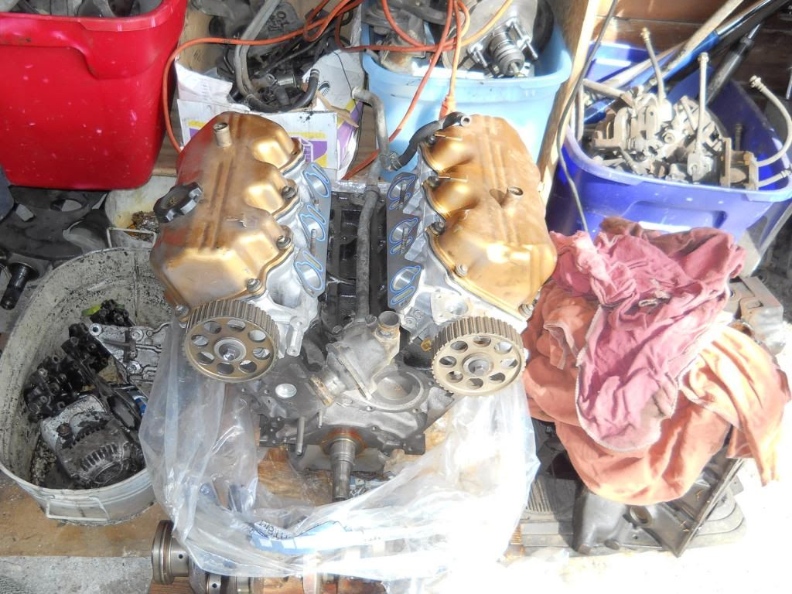

-
I'm picking up a 89 NA2T project car from a group member who is leaving the country for $1000.
It has a new from the machine shop VG33 long block bored to 3.4 with Z31 crank, new internals, rebuilt ported and polished heads, ported intake and throttle body. It just need the external assembly completed. It is a bare long block with no valve covers or oil pan.
I don't have all the details yet but it's to good a deal to pass up.
I know I have seen threads about adapting the VG33 to our cars but I would like some input on adapting this long block for use in my car.
I have not seen the motor yet as it is still at the machine shop. the PO will be picking it up this week and I will be picking up the car, motor, extra parts and everything next weekend.
What do I have to change or modify to make it work in my 86 turbo project? I have a the 86T motor for parts that is in the car now and is froze up.
1988 300ZX Turbo, Shiro Special #760
1988 300ZX Turbo Automatic (wife's car)
1991 Hard-body 2WD
http://zccw.org/zccw/?page_id=1215 -
I think all of that info was in the VG33 thread that was stickied, good luck finding it though. From what I remember, I think you'll have it a bit easier with a Z31 crank in it. Most of the adaptations were needed with the VG33 crank.Prius… because Pretentious wouldn't fit across the back of the car…
Cheap, Fast, Reliable - pick any two
My 1986 Turbo Build -
Yea with the vg30 crank all the accessories are the same, I assume they have the oil feed port for the turbo done… besides that only the exhaust studs will be bigger, which might require reaming the manifolds a bit? -
7/16 drill straight through and you're good for 10mmOriginally posted by G-EUsual Z31 suspect: Garage Queen (aka broken)

-
oil feed port for the turbo?
1988 300ZX Turbo, Shiro Special #760
1988 300ZX Turbo Automatic (wife's car)
1991 Hard-body 2WD
http://zccw.org/zccw/?page_id=1215 -
Some 3.3 have the port plugged with a bolt and copper washer, others don't and need to be drilled and tapped.
Is the crank a W-series or A/B series Z31? That would depend which pulley to use or if you need the adaptor/spacer thing for the pulley.
1986 300ZX Turbo…sold
1990 Skyline GT-R…new money pit
2014 Juke Nismo RS 6-speed…daily -
I haven't seen it yet but the guy I'm buying it from has a 89 NA so I'm assuming he is using the 89 NA motor for parts which is a W series.
1988 300ZX Turbo, Shiro Special #760
1988 300ZX Turbo Automatic (wife's car)
1991 Hard-body 2WD
http://zccw.org/zccw/?page_id=1215 -
http://www.xenonz31.com/vg33eswap.html provides some good info on the swap.Zoey - 1987 Z31T GLL - HKS EVC / CM SS 3" turbo-back / Stance GR+
Black Betty - 2014 Audi C7 S6 APR1 -
Google -
I know I already linked this thread in the Adjustable Cam Gear thread but I figured to post it here as well for you. I used the information contained within Parkers link as well as the information within this thread while I was planning/buying everything for my VG33 build. Best of luck with the motor. With what you do to cars, I think you will end up having a pretty fun Z with a fresh 3.4 block.
http://forums.nicoclub.com/true-diff…3-t337554.htmlBuild Log Link: http://z31performance.com/showthread…-VG33-HX35-WIP
-
VG33 timing belt will work with 1994 Maxima crank sprocket. Last production year 3rd gen Maxima went round tooth timing components.Cha iro
enjoy building it yourself.
if it fails, fuck it.
at least you gave it a whirl. -
If using Z31 crank, just run Z31 accessories. W-series crank pulley with a 87-89 PS pump and you're good to go.
Don't forget the oil filter stud and such either. :P- VG30DET (HE341) 86 300ZX - 1982 280ZX Turbo - Headered NA 1986 300ZX 2+2 - 2000 Xterra - -
Came with a warranty and break in instructions. Receipts totaling over $2500.
Heads were surfaced, ported and polished, new valves, springs, rocker arms, lifters, seals and every thing, but needs one stud on the intake replaced.
Block was hot tanked, checked for cracks, bored to 3.4 liters, W series Z31 crank was ground and polished, new pistons, everything was balanced and blueprinted. Came with a have a disassembled 89 NA motor with all the accessories, new water pump and timing belt kit, complete gasket set. I need a Turbo auto oil pump and a few other things. This will be saved for a future built for 350-400 HP build. After the 86T is done, I'll start collecting fuel system parts, fuel management system and a upgraded turbo, etc.

1988 300ZX Turbo, Shiro Special #760
1988 300ZX Turbo Automatic (wife's car)
1991 Hard-body 2WD
http://zccw.org/zccw/?page_id=1215 -
Since you are using a VG30 crank, I have a Ported Atsugi Turbo Auto Oil Pump that I bought off a member for my VG build but then ended up going with the 33 crank. If you are interested in it, let me know.Build Log Link: http://z31performance.com/showthread…-VG33-HX35-WIP
-
PM me with a price for the oil pump.
1988 300ZX Turbo, Shiro Special #760
1988 300ZX Turbo Automatic (wife's car)
1991 Hard-body 2WD
http://zccw.org/zccw/?page_id=1215

Copyright © 2006–. All rights reserved. Privacy Policy